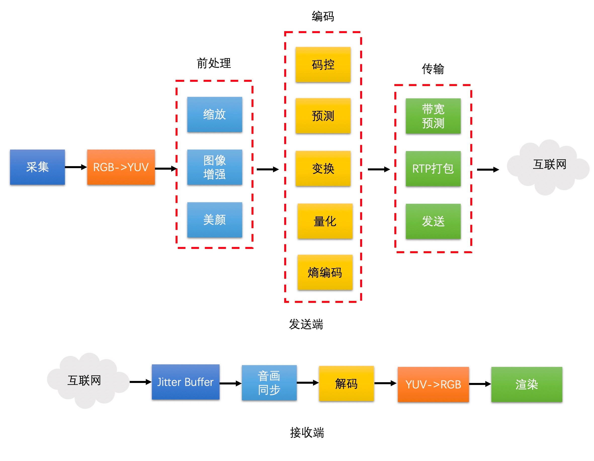
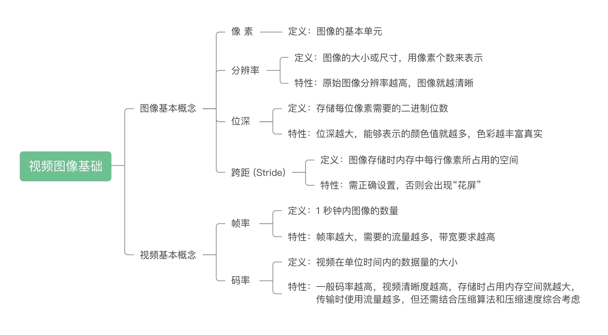
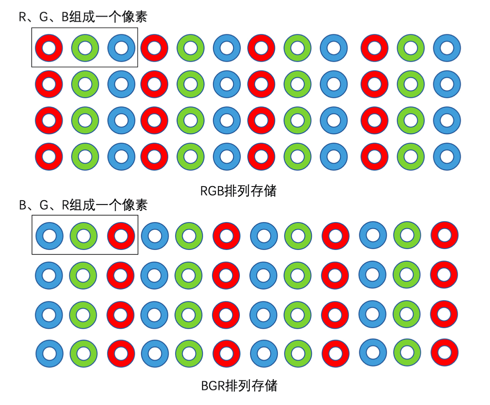
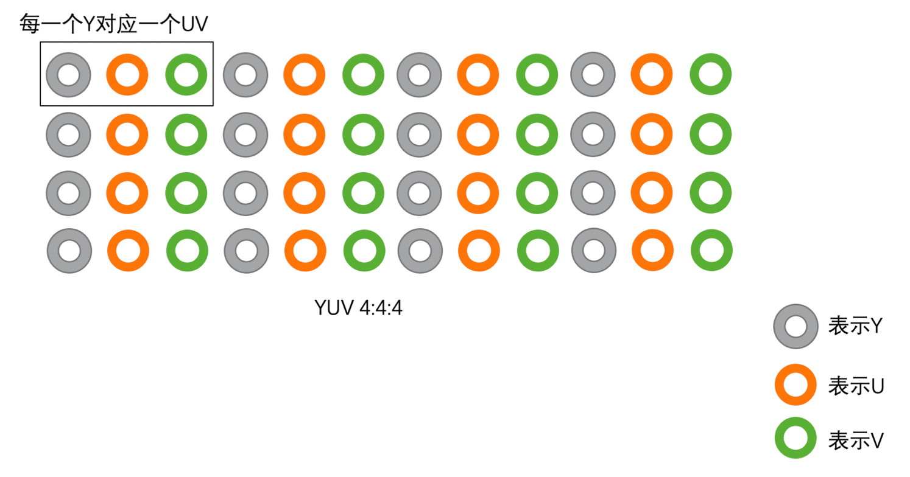
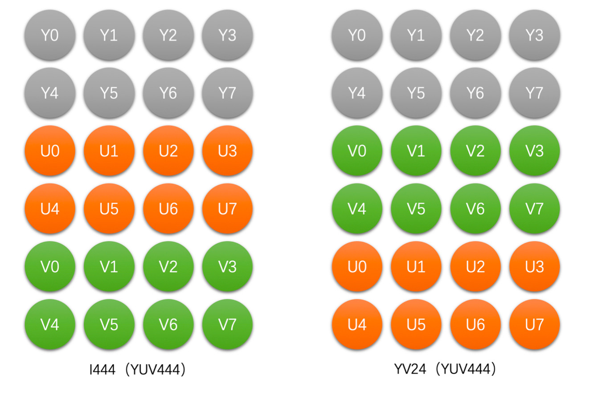
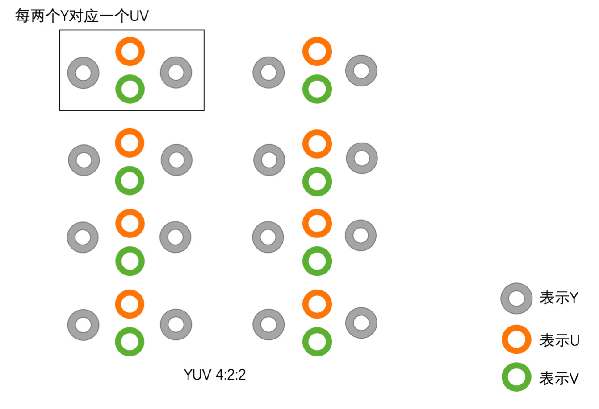
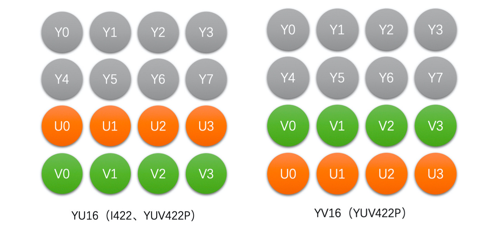
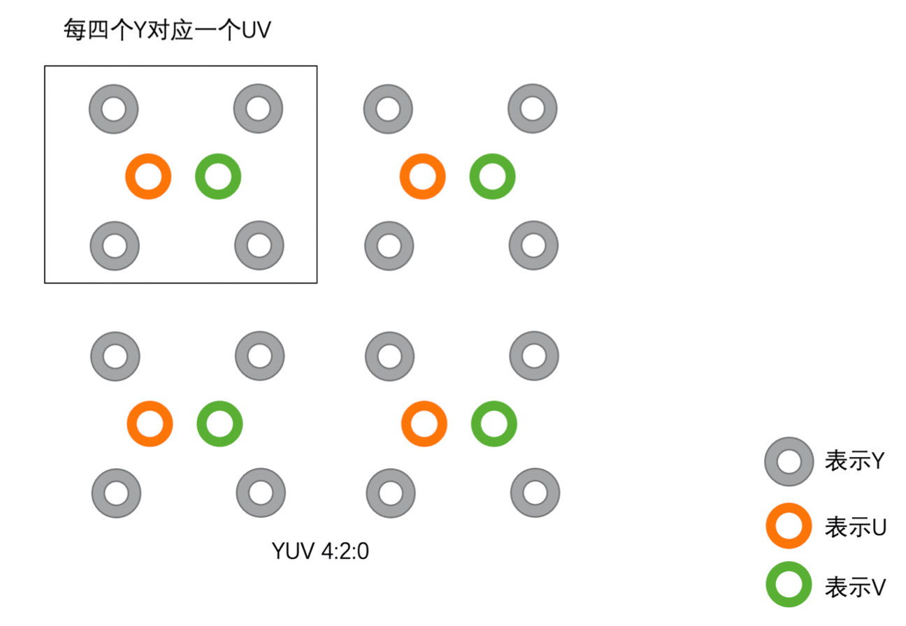
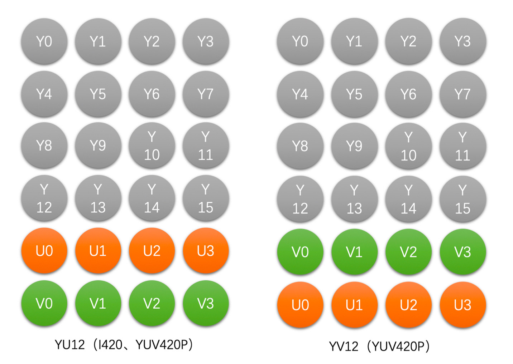

视频处理

图像的基本概念

- 存取一幅图像需要特别注意 Stride 这个参数，它跟分辨率中的 Width 是不一样的。为了快速存取，往往会选择以内存对齐的方式存储一行像素（比如 16 字节）。
Color Range
对于一个 8bit 的 RGB 图像，Full Range 的 R、G、B 取值范围是 0~255， 而 Limited Range 的 R、G、B 取值范围是 16~235。
颜色空间
RGB

- OpenCV 使用的是 BGR 格式，而不是 RGB。
- RGB 三个颜色是有相关性的，所以不太方便做图像压缩编码。
- RGB 颜色空间更适合图像采集和显示。
YUV
YUV 图像将亮度信息 Y 与色彩信息 U、V 分离开来。Y 表示亮度(Luma)，是图像的总体轮廓，U、V 表示色度(Chroma)，主要描绘图像的色彩等信息。YUV 颜色空间更适合于编码和存储。
根据采样方式的不同，YUV 主要分为 YUV 4:4:4、YUV 4:2:2、YUV 4:2:0 三种。
根据存储方式的不同，YUV 还可以分成三大类：Planar， Semi-Planar 和 Packed。Planar 格式的 YUV 是先连续存储所有像素点的 Y，然后存储所有像素点的 U（或者 V），之后再存储所有像素点的 V（或者 U）。Semi-planar 格式的 YUV 是先存储完所有像素的 Y，然后 U、V 连续地交错存储。packed 格式的 YUV 是连续交错存储的。
YUV444

Planar 存储格式: 
YUV422

Planar 存储格式: 
Semi-Planar 存储格式:

YUV420 (最常用)

Planar 存储格式: 
Semi-Planar 存储格式:

RGB 与 YUV 转换
RGB 和 YUV 格式转换需要双方确定好转换标准和 Color Range。
BT601 标准（标清）
Limited Range:
RGB->YUV 转换公式
$$ \begin{cases} Y &= 0.299 * R + 0.587 * G + 0.114 * B \\ U &= -0.172 * R - 0.339 * G + 0.511 * B + 128 \\ V &= 0.511 * R - 0.428 * G - 0.083 * B + 128 \end{cases} $$
YUV->RGB 转换公式
$$ \begin{cases} R &= Y + 1.371 * (V - 128) \\ G &= Y - 0.336 * (U - 128) - 0.698 * (V - 128) \\ B &= Y + 1.732 * (U - 128) \end{cases} $$
Full Range:
RGB->YUV 转换公式
$$ \begin{cases} Y &= 16 + 0.257 * R + 0.504 * G + 0.098 * B \\ U &= 128 - 0.148 * R - 0.291 * G + 0.439 * B \\ V &= 128 + 0.439 * R - 0.368 * G - 0.071 * B \end{cases} $$
YUV->RGB 转换公式
$$ \begin{cases} R &= 1.164 * (Y - 16) + 1.596 * (V - 128) \\ G &= 1.164 * (Y - 16) - 0.392 * (U - 128) - 0.812 * (V - 128) \\ B &= 1.164 * (Y - 16) + 2.016 * (U - 128) \end{cases} $$
BT709 标准（高清）
Limited Range:
RGB->YUV 转换公式
$$ \begin{cases} Y &= 0.213 * R + 0.715 * G + 0.072 * B \\ U &= -0.117 * R - 0.394 * G + 0.511 * B + 128 \\ V &= 0.511 * R - 0.464 * G - 0.047 * B + 128 \end{cases} $$
YUV->RGB 转换公式
$$ \begin{cases} R &= Y + 1.540 * (V - 128) \\ G &= Y - 0.183 * (U - 128) - 0.459 * (V - 128) \\ B &= Y + 1.816 * (U - 128) \end{cases} $$
Full Range:
RGB->YUV 转换公式
$$ \begin{cases} Y &= 16 + 0.183 * R + 0.614 * G + 0.062 * B \\ U &= 128 - 0.101 * R - 0.339 * G + 0.439 * B \\ V &= 128 + 0.439 * R - 0.339 * G - 0.040 * B \end{cases} $$
YUV->RGB 转换公式
$$ \begin{cases} R &= 1.164 * (Y - 16) + 1.792 * (V - 128) \\ G &= 1.164 * (Y - 16) - 0.213 * (U - 128) - 0.534 * (V - 128) \\ B &= 1.164 * (Y - 16) + 2.114 * (U - 128) \end{cases} $$
使用 ffmpeg 将 png 图片转成 YUV 格式
ffmpeg -i hello.png -pix_fmt yuv420p hello-yuv420p.yuv
转换得到的 yuv 图像可以使用 YUView 软件打开（注意，需要自行设置图片的分辨率等参数，否则不能正确显示）。
由于 yuv 图片除了原始的像素数据，没有保存额外的数据，因此转换得到的图像大小为：320*320*3/2 = 153600 字节。